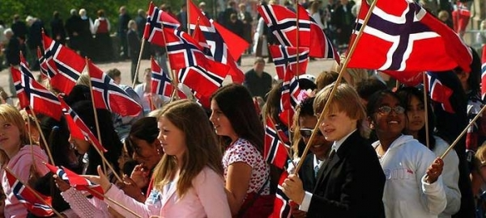

Праздники в Норвегии делятся на государственные, национальные и религиозные. Самые значительные праздники в Норвегии – это Рождество, День Конституции, Новый год, День труда. Среди религиозных праздников выделяется Пасха, Вознесение, Троица, Страстная пятница